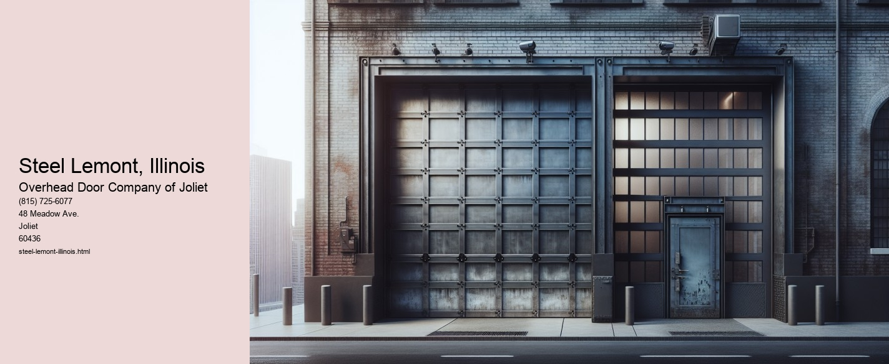

Steel Lemont, Illinois: A Legacy of Industry and Innovation
Nestled in the heart of the Midwest, Lemont, Illinois, is a town that boasts a rich history intertwined with the growth and development of the American steel industry. While not as widely recognized as Pittsburgh or Gary, Lemont has played a pivotal role in the industrial narrative of the United States.
Lemonts story begins in the mid-19th century, a time when America was rapidly industrializing. The towns strategic location along the Illinois and Michigan Canal made it a vital hub for transportation and commerce. This canal connected the Great Lakes to the Mississippi River, facilitating the movement of goods and raw materials across the country. As the demand for steel surged, Lemonts accessibility to waterways and railroads positioned it as a prime location for steel manufacturing.
The steel industry in Lemont truly took off in the late 1800s and early 1900s. The discovery of rich limestone deposits in the area further bolstered its industrial prospects. Limestone, an essential component in steel production, was abundantly available, and its extraction became a significant economic activity. Steel mills began to dot the landscape, their towering smokestacks a testament to the towns burgeoning industrial might.
These mills not only provided a steady source of employment but also attracted a diverse workforce, fostering a sense of community and shared purpose. Immigrants from various parts of Europe arrived in Lemont, bringing with them rich cultural traditions and a strong work ethic. The towns population swelled, and neighborhoods flourished around the steel mills, creating a vibrant tapestry of cultures and traditions.
However, the steel industry in Lemont was not without its challenges. The Great Depression of the 1930s hit the town hard, leading to layoffs and economic hardship.
The post-war era brought about significant changes in the steel industry, with advancements in technology and shifts in economic policies. Global competition intensified, and many American steel towns faced decline. Lemont was no exception, as the latter half of the 20th century saw a gradual reduction in steel production. Many mills closed their doors, and the town faced the daunting task of redefining its economic identity.
Despite these challenges, Lemont has demonstrated remarkable adaptability. The town has embraced diversification, attracting new industries such as technology, healthcare, and education. The remnants of its industrial past have been repurposed, with old mill sites transformed into cultural and recreational spaces. This adaptive reuse not only preserves Lemonts historical legacy but also breathes new life into the community.
Today, Lemont stands as a testament to the enduring spirit of innovation and resilience. The legacy of steel is not forgotten, as the town continues to honor its industrial roots through museums, historical societies, and community events. These efforts ensure that future generations understand the profound impact that steel had on shaping the towns identity.
In conclusion, Steel Lemont, Illinois, is more than just a chapter in the history of American industry; it is a story of transformation, resilience, and community. From its early days as a bustling steel hub to its current status as a diverse and thriving town, Lemont has continually adapted to the changing tides of industry and economy. Its journey is a microcosm of the broader American experience, reflecting the challenges and triumphs of a nation built on the backbone of steel. As we look to the future, Lemont remains a beacon of perseverance and innovation, a town that honors its past while forging ahead into new
Materials Used in Industrial Garage Doors Lemont, Illinois